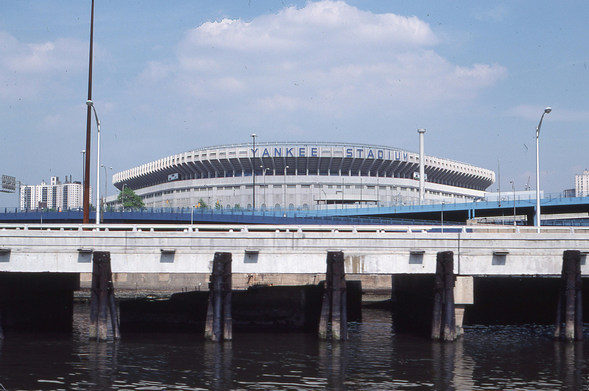
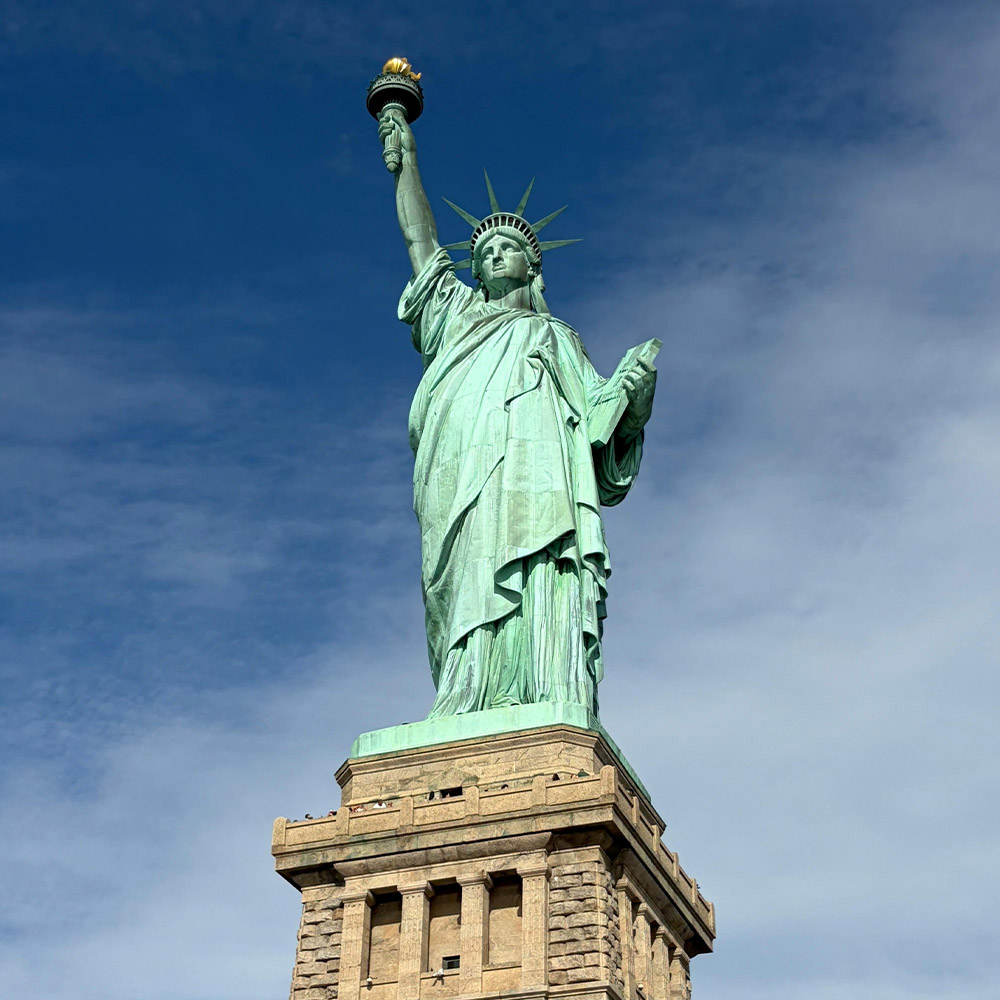
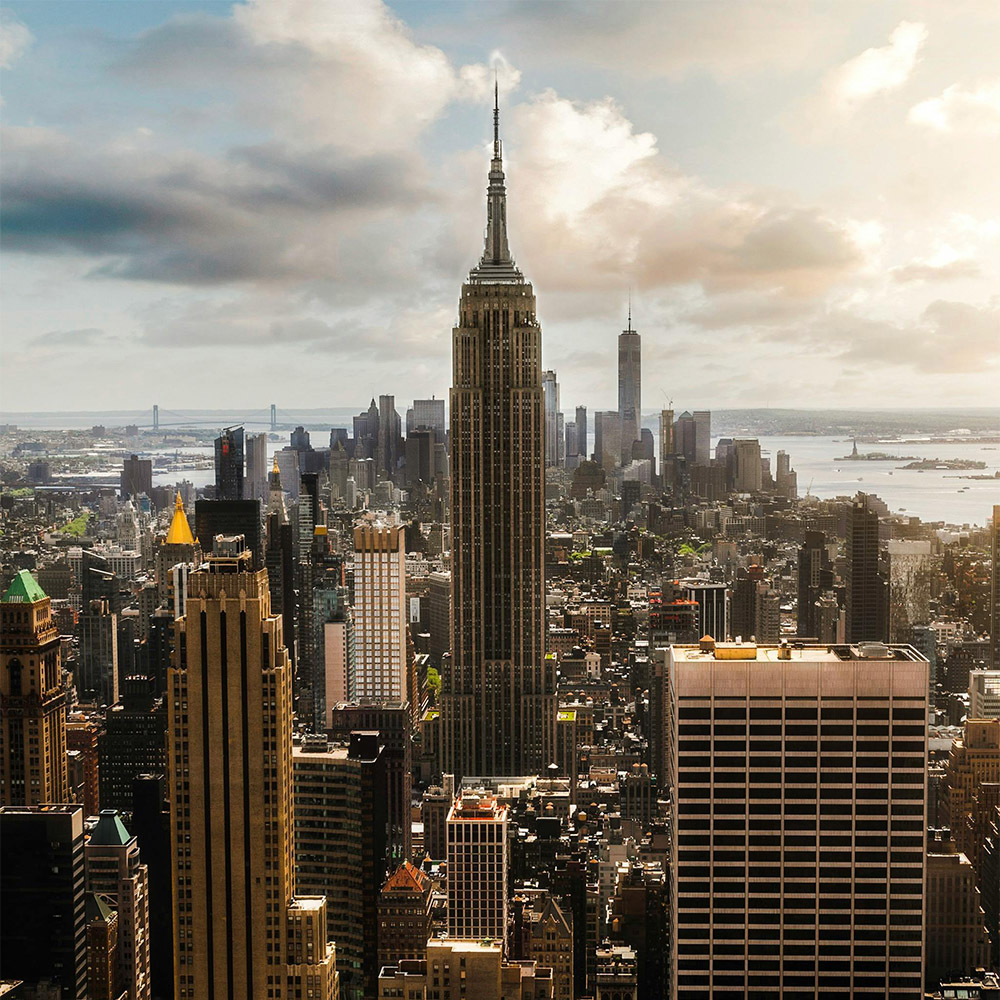
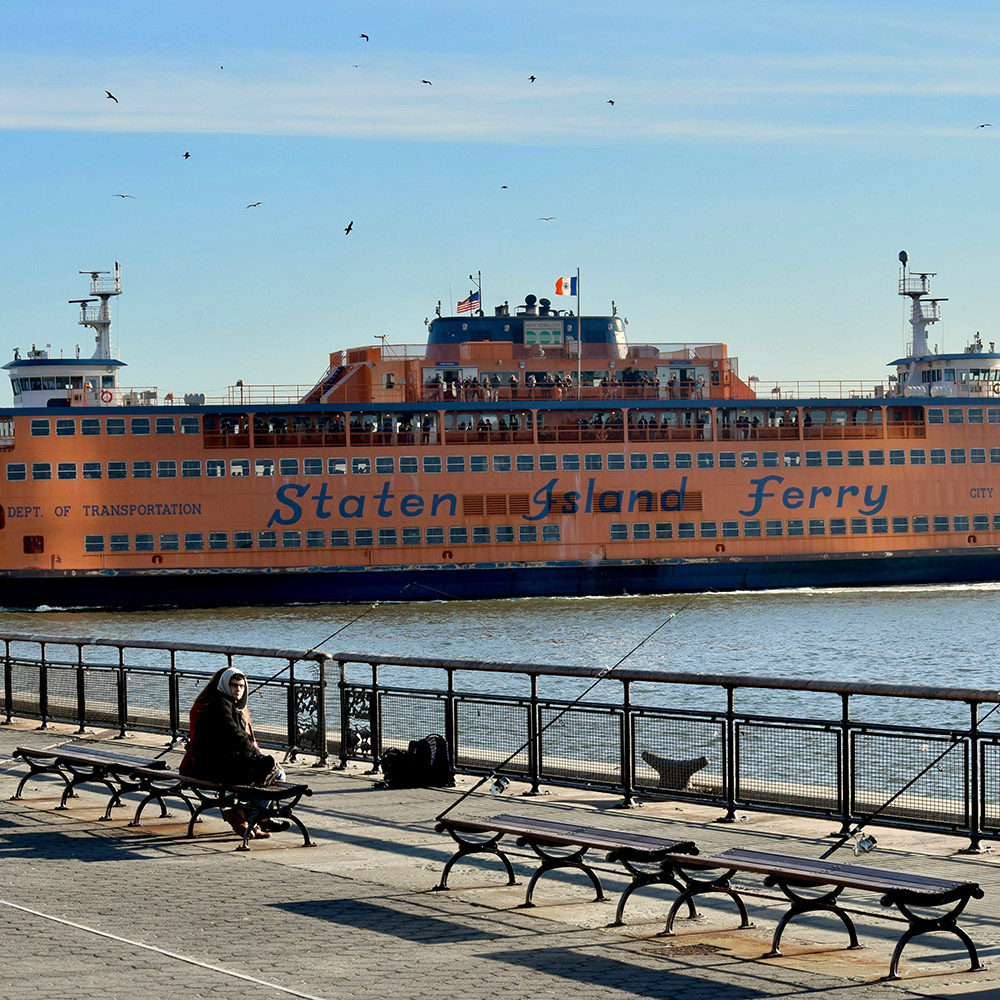
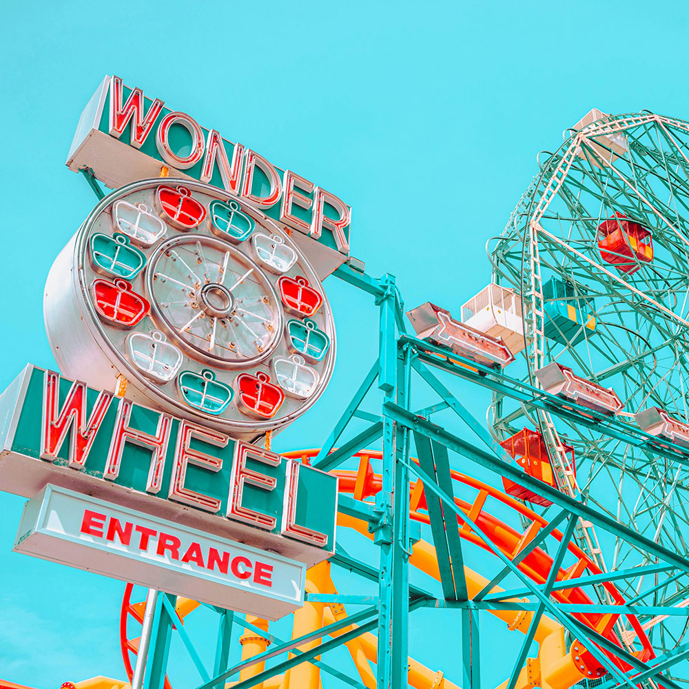
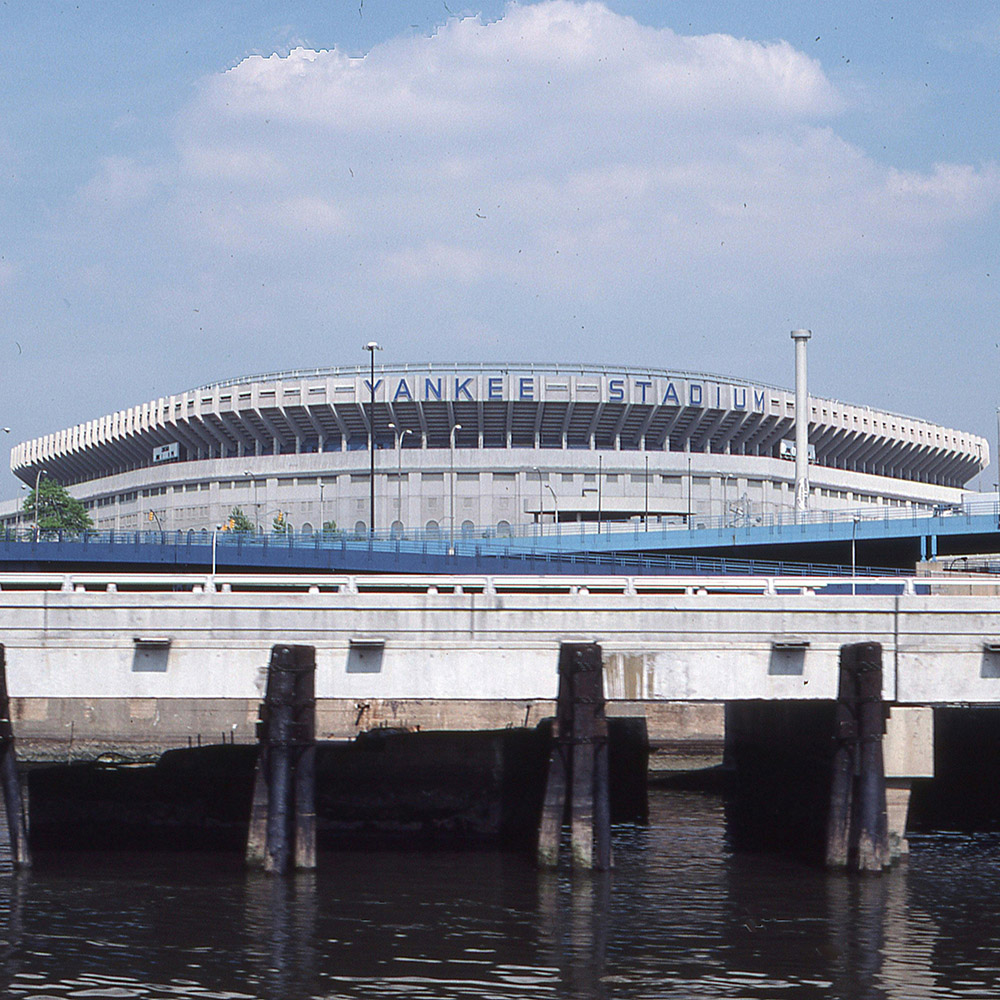
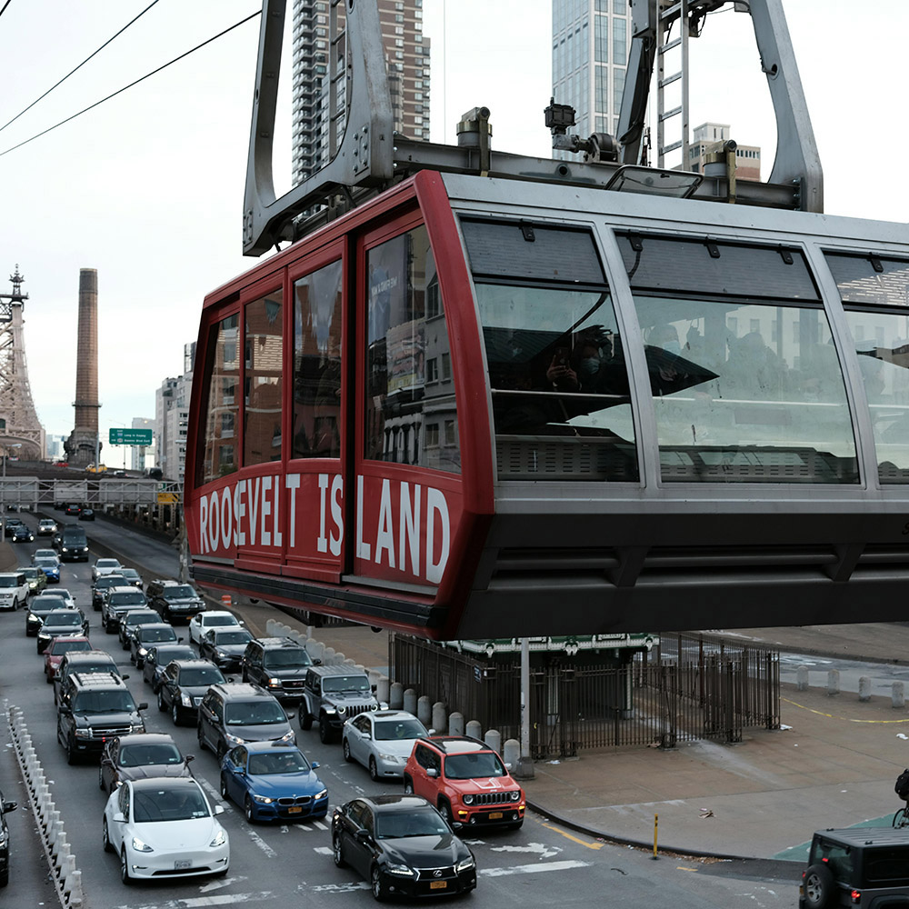

NYC Landmarks Virtual Tour
This site highlights some interesting landmarks across New York City's five boroughs.
New York City is filled with landmarks, tourist attractions and historic sites dating from before it was known as New York City to more recent additions. Click through this site to explore!
Featured Landmarks

Yankee Stadium is the legendary ballpark of Major League Baseball's New York Yankees in the South Bronx. Famously known as "The House That Ruth Built," it has been a centerpiece of the New York sports skyline since its debut in 1923.
The Bronx has been a hub of baseball history for more than a century, known for its championship legacy, roaring crowds, and electric summertime energy. From historic World Series moments to modern matchups, it remains one of New York City's most beloved destinations for iconic sports culture.
NYC Landmarks

Statue of Liberty

Empire State Building

Staten Island Ferry

Wonder Wheel

Yankee Stadium
